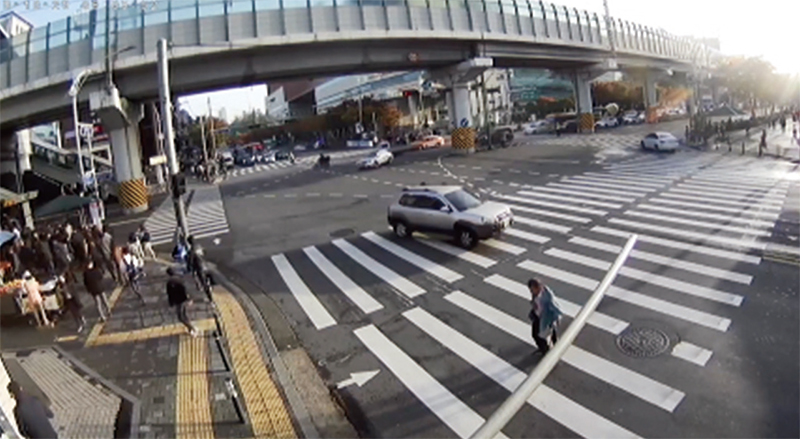
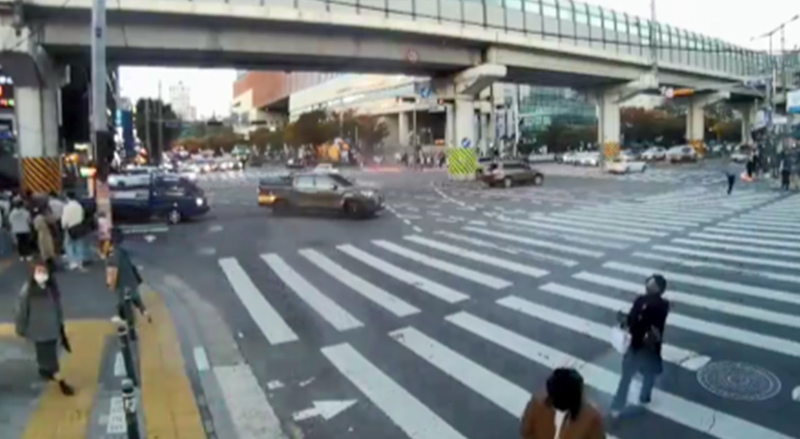

우회전할 때 보행자 보호,
얼마나 지키고 있을까?
우회전 보행자 보호의무 준수율 분석
하지만 아직도 교차로 우회전 시 횡단보도를 지나는 운전 방법에 대해
혼동을 느끼는 운전자들이 많은 상황.
이에 도로교통공단은 다양한 대국민 홍보와 안전 활동을 전개하면서
우회전 차량 운전자의 인식 변화 정도를 살펴보기로 했다.
지난 2021년 전체 교통 사망사고 중 34.9%는 보행자 교통사고였다. 특히 횡단보도 내 사망자가 전체 보행 사망자의 23.7%를 차지해 보행자 보호를 위한 적극적인 홍보의 필요성이 대두되었다. 도로교통공단은 보행자 중심의 교통문화 조성을 위해 개정된 도로교통법(2022.7.12.) 시행에 맞춰 2022년 1월부터 10월까지 약 10개월 간의 홍보활동을 펼쳤다. 언론 보도 및 SNS 채널 및 온라인 커뮤니티를 통한 홍보는 물론, 방송 송출과 각종 캠페인을 통해 보행자 우선 교통문화 정착에 앞장섰다.
한편 도로교통공단은 지난 3년간(2018~2020년) 발생한 우회전 교통사고 다발지점 60곳을 대상으로 사고 원인 분석 및 안전시설 정비를 위한 현장 점검에도 나섰다. 가로수와 현수막, 가로등과 같이 시야를 가리는 지장물을 제거하는 등 안전시설을 개선했으며, 차로폭이나 선형 조정 등을 통해 차량 감속을 유도하고 부적합한 교차로 기하구조도 개선했다.
도로교통공단은 앞서 진행한 활동들의 효과를 확인하기 위해 서울, 대구, 인천, 경기 지역의 29개 교차로 50개 지점에서 개정 도로교통법 시행 전과 시행 3개월 후를 비교해 우회전 보행자 보호의무 준수율을 분석했다. 조사는 교통량조사 영상 및 CCTV 영상을 통해, 횡단 중인 보행자가 있음에도 횡단보도를 통과하는 등 운전자들의 보행자 보호의무 위반 비율을 확인하는 방식으로 진행됐다. 조사 결과, 우회전 차량의 보행자 보호의무 준수율은 개정 도로교통법 시행 전 35.8% 수준이었지만, 시행 3개월 후에는 78.2%로 약 42.4%p나 증가한 것으로 나타났다. 차종별로는 소형승합차 45.4%p, 승용차 43.5%p, 이륜차 41.8%p, 택시 37.7%p, 버스 34.3%p, 화물차 33.9%p 순으로 준수율이 증가했다.
왕복 차로 수(횡단보도 길이)별 준수율의 경우는 차로 수와 관계없이 준수율이 전반적으로 개선됐다. 특히 우회전 교통섬이 있는 우회전 차로와 횡단보도 길이가 긴 차로(5~11차로)의 개선 효과가 상대적으로 더 큰 것으로 나타났다.
한편, 개정 후 전체적인 보행자 보호의무 준수율은 매우 향상되었지만, 신호등이 없는 횡단보도에서 우회전 차량은 개정 전, 후 모두 보행자 보호 준수율이 낮은 것으로 나타났다. 또한 상대적으로 이동이 자유로운 이륜차는 개정 후에도 절반 정도가 보행자 보호의무 준수사항을 위반하고 있어 더욱 주의가 필요하다.
모든 운전자는 보행자를 보호해야 할 의무가 있다. 횡단보도의 유무와 법규 개정을 떠나 모든 이들이 운전자이기 전에 보행자임을 기억한다면 보행자 보호의무 준수율은 더욱 올라가지 않을까 기대해 본다.


도로교통법 제27조(보행자의 보호)
- ① 모든 차 또는 노면전차의 운전자는 보행자(제13조의2제6항에 따라 자전거 등에서 내려서 자전거 등을 끌거나 들고 통행하는 자전거 등의 운전자를 포함한다)가 횡단보도를 통행하고 있거나 통행하려고 하는 때에는 보행자의 횡단을 방해하거나 위험을 주지 아니하도록 그 횡단보도 앞(정지선이 설치되어 있는 곳에서는 그 정지선을 말한다)에서 일시정지하여야 한다. <개정 2018. 3. 27., 2020. 6. 9., 2022. 1. 11.>
- ② 모든 차 또는 노면전차의 운전자는 교통정리를 하고 있는 교차로에서 좌회전이나 우회전을 하려는 경우에는 신호기 또는 경찰공무원 등의 신호나 지시에 따라 도로를 횡단하는 보행자의 통행을 방해하여서는 아니 된다. <개정 2018. 3. 27.>
- ③ 모든 차의 운전자는 교통정리를 하고 있지 아니하는 교차로 또는 그 부근의 도로를 횡단하는 보행자의 통행을 방해하여서는 아니 된다.
- ④ 모든 차의 운전자는 도로에 설치된 안전지대에 보행자가 있는 경우와 차로가 설치되지 아니한 좁은 도로에서 보행자의 옆을 지나는 경우에는 안전한 거리를 두고 서행하여야 한다.
- ⑤ 모든 차 또는 노면전차의 운전자는 보행자가 제10조제3항에 따라 횡단보도가 설치되어 있지 아니한 도로를 횡단하고 있을 때에는 안전거리를 두고 일시정지하여 보행자가 안전하게 횡단할 수 있도록 하여야 한다. <개정 2018. 3. 27.>
-
⑥
모든 차의 운전자는 다음 각호의 어느 하나에 해당하는 곳에서 보행자의 옆을 지나는 경우에는 안전한 거리를 두고 서행하여야 하며, 보행자의 통행에 방해가 될 때에는 서행하거나 일시정지하여 보행자가 안전하게 통행할 수 있도록 하여야 한다. <개정 2022. 1. 11.>
- 1. 보도와 차도가 구분되지 아니한 도로 중 중앙선이 없는 도로
- 2. 보행자우선도로
- 3. 도로 외의 곳
- ⑦ 모든 차 또는 노면전차의 운전자는 제12조제1항에 따른 어린이 보호구역 내에 설치된 횡단보도 중 신호기가 설치되지 아니한 횡단보도 앞(정지선이 설치된 경우에는 그 정지선을 말한다)에서는 보행자의 횡단 여부와 관계없이 일시정지하여야 한다. <신설 2022. 1. 11.>